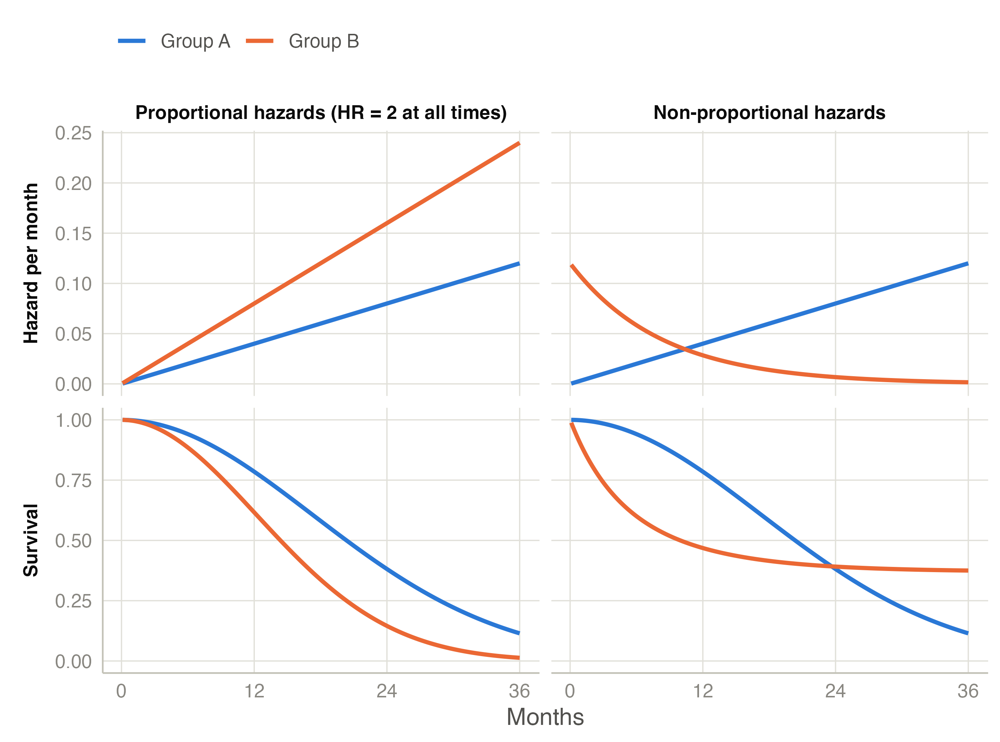
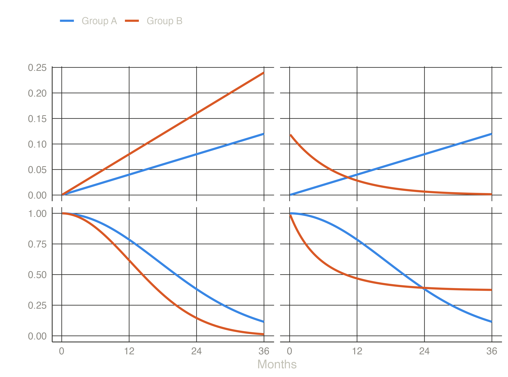

The log-rank test says whether survival differs between groups. It does not say by how much, it cannot use a continuous variable such as age without cutting it into groups, and it cannot tell whether ECOG predicts survival by itself or only because patients with a worse ECOG are older. Cox regression (Cox 1972) does all three, and is the most used model in clinical research with a time-to-event outcome.
Cox regression describes the hazard of a patient with characteristics \(x_1, x_2, \dots\) as a baseline hazard multiplied by a factor that depends on those characteristics:
\[h(t \mid x) = h_0(t)\,\exp(\beta_1 x_1 + \beta_2 x_2 + \cdots)\]
\(h_0(t)\) is the hazard of a patient with all \(x = 0\) (the reference levels). The model makes no assumption about its shape: it can rise, fall or do anything else. This is why the Cox model is called semi-parametric.
For two patients who differ by one unit in \(x_1\) and are equal in everything else, the ratio of their hazards is
\[\mathrm{HR} = \frac{h(t \mid x_1 + 1)}{h(t \mid x_1)} = e^{\beta_1}\]
and it does not depend on \(t\). The model assumes that a variable multiplies the hazard by the same factor at every time: the proportional hazards assumption.
A hazard ratio of 2 means that at any time, among patients still alive, those in one group die at twice the rate of comparable patients in the other group. HR = 1 means no difference; HR < 1 a lower hazard (better prognosis), HR > 1 a higher one.


Cox’s idea was to avoid estimating \(h_0(t)\) at all. At each time \(t_j\) when a patient dies, ask: of all the patients at risk at that moment (\(R_j\)), what was the probability that it was this patient who died? Under the model it is
\[\frac{e^{\beta^\top x_{(j)}}}{\sum_{i \in R_j} e^{\beta^\top x_i}}\]
The baseline hazard cancels out. Multiplying these probabilities over all event times gives the partial likelihood, and the estimates \(\hat\beta\) are the values that maximise it. Only the order of the event times matters, not their exact values. The standard errors come from the curvature of the likelihood, and the 95% CI of a hazard ratio is \(\exp(\hat\beta \pm 1.96\,\mathrm{SE})\): asymmetric around the HR.
Factors (nominal or ordinal variables, in the Factors box) are compared level by level with a reference level: the first level of the variable in jamovi. A factor with \(k\) levels gets \(k - 1\) hazard ratios, each “this level versus the reference”. To change the reference, reorder the levels in the variable’s Setup. For an ordered factor such as ECOG, the option Trend test (p) adds a 1-df test that the hazard changes steadily along the levels, like the trend version of the log-rank test.
Covariates (continuous variables, in the Covariates box) get one hazard ratio per unit increase: per year of age, per mg/dL. The model assumes that each unit multiplies the hazard by the same factor, whether from 40 to 41 years or from 80 to 81 (a log-linear effect); this module does not check that. A per-unit HR can look tiny (1.02 per year) and still matter: over 10 years it is \(1.02^{10} = 1.22\). The option HR for covariates reports it per 1 SD or per any value you choose (for example per 10 years); only the unit changes, not the p-values.
A univariable (crude) model has one variable. A multivariable model estimates the effect of each variable adjusted for the others: the HR for ECOG compares patients of the same sex and age. When the two differ, the variable was partly confounded: its crude effect was partly the effect of something associated with it. The option Univariable and multivariable puts both side by side, fitted on the same patients, which is the usual table of a prognostic-factor paper.
How many variables? A classic rule of thumb is about 10 events per estimated coefficient (Peduzzi et al. 1995); it is not a strict limit (Vittinghoff and McCulloch 2007), but with fewer events the estimates become unstable and too extreme. Count events, not patients: 1000 patients with 30 deaths support about three coefficients.
The concordance index (C-index) (Harrell et al. 1982, 1996) measures how well the model ranks patients: take two patients whose order of events is known; C is the probability that the one the model predicts to be at higher risk has the event first. C = 0.5 is chance and C = 1 perfect ranking. Clinical models with a few variables typically reach 0.6–0.75. C says nothing about calibration (whether the predicted probabilities are right).
The Cox model assumes that each HR is constant over time. It is violated when, for example, a treatment helps only in the first months, or the curves of two groups cross. Then the single reported HR is a weighted average of different effects at different times, which may describe no patient well (Hernán 2010). Three checks:
A small p-value does not by itself mean the model is useless: in a large study a trivial change in the HR gives a small p, and in a small study a real change can be missed (Stensrud and Hernán 2020). Always look at the residual plot. The assumptions example shows what to do when the assumption fails.
A variable that violates proportional hazards, or one you need to adjust for but not to estimate (for example the hospital in a multicentre study), can go into Strata. The model then gets a separate baseline hazard \(h_{0s}(t)\) for each stratum, with shapes free to differ, while the HRs of the other variables are shared across strata. The price is that there is no HR for the stratification variable.
Sometimes the effect of one variable depends on another: a marker is prognostic in women but not in men, or a treatment works only in early stages. This is effect modification, tested by adding an interaction term (Interactions section of the Cox panel). The likelihood-ratio test for the interaction tells whether the effect differs between subgroups; the table Hazard ratios within subgroups gives the effect in each one.
Two warnings. With an interaction in the model, the “main effect” HR of a variable applies only at the reference level of the other variable. And the power to detect an interaction is low: finding a significant effect in one subgroup and not in another is not evidence that the effects differ; only the interaction test is. The interactions example shows both.
Hazard ratios are hard to translate into probabilities. Adjusted survival curves show what survival would look like in each group of a factor if all groups had the same distribution of the other variables. The module uses direct standardisation (Makuch 1982): for each level of the factor, it predicts the survival curve of every patient in the data as if they had that level (keeping their own values of the other variables), and averages these curves. Comparing them with the unadjusted Kaplan-Meier curves shows how much of the difference between groups is explained by the other variables. Adjusted curves are not available for stratified models.
Next: the worked examples, starting with Kaplan-Meier in jamovi